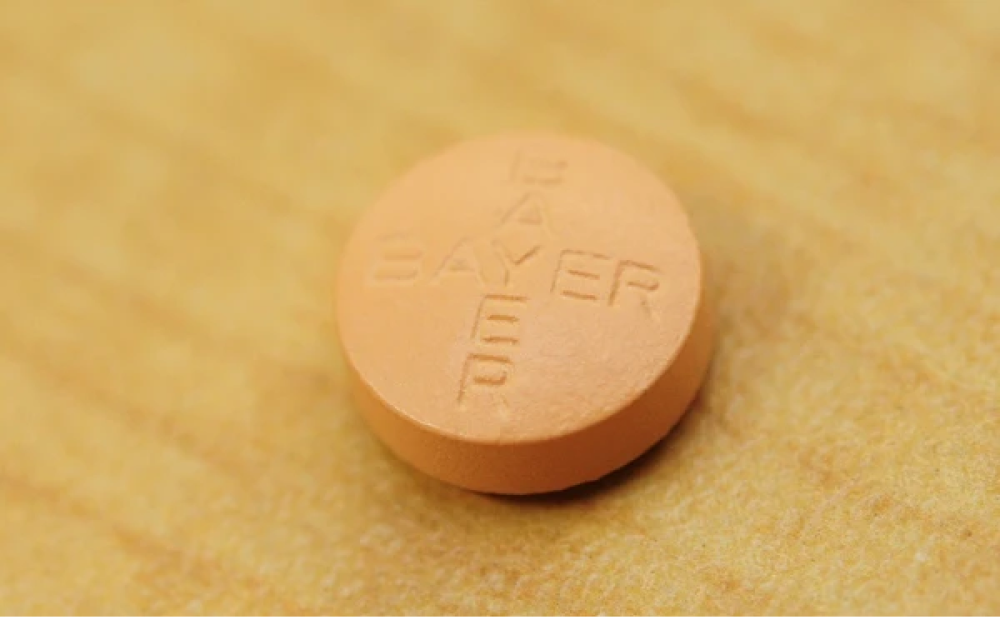
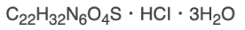
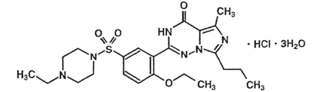
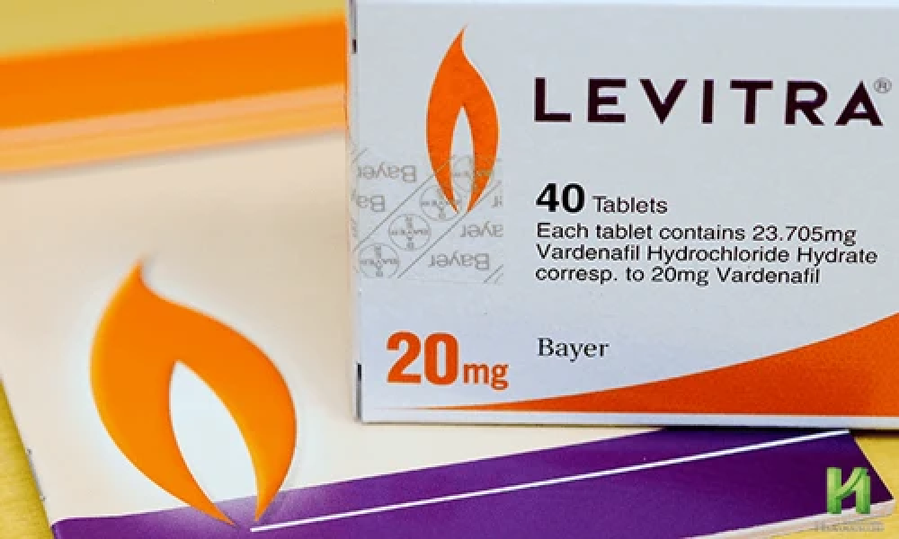

メーカー都合により国内販売中止
バイエル薬品株式会社
レビトラ
10mg
1,500円
20mg
1,800円
全医院にて在庫無し
目次
※知りたい情報をクリック
更新日：2025年3月14日
レビトラはED（勃起不全）治療薬としてバイアグラが発売された5年後の2004年6月に10mg、2007年7月に20mが発売開始されました。製造販売元はアスピリンの開発で有名なドイツに本社を持つバイエル薬品という製薬会社です。有効成分は「バルデナフィル」、製剤名は「バルデナフィル塩酸塩水和物錠」、販売名である「レビトラ」はバイエル薬品の所有する商標登録名です。
2021年10月に発売元であるバイエル薬品より販売中止の発表がされ、現在、国内では正規品を処方する医療機関は存在しません。詳しくは販売中止のお知らせをご覧下さい。
剤形は画像の通り円形の外形の淡黄赤色（オレンジ色）のフィルムコーティング剤なので見た目はオレンジでも中身は白い薬剤で、水に溶けやすい性質上、即効性があるのが特長です。国内では厚労省から認可を得たバルデナフィル錠（国内正規レビトラジェネリック）も、しっかりレビトラの特長を引き継いでいて当院でも処方をしていますのでレビトラの代替薬は、こちらをご利用下さい。

オンライン診療（郵送処方）
１万円以上で送料無料。来院歴が無くてもOK。即日配送。国内正規品のみ。土日も発送。
１万円以上で送料無料。来院歴が無くてもOK。
即日配送。国内正規品のみ。土日も発送。
| 有効成分 | バルデナフィル(5mg・10mg・20mg) |
| 作用時間 | 10mg/5時間・20mg/7～9時間 |
| 特長 | 即効性がある |
| 服用方法 | 性行為の1時間前（空腹時であれば30分前） |
| 併用禁忌薬 | 硝酸剤及びNO供与剤 ・sGC刺激剤(リオシグアト：アデムパス)・新型コロナ治療薬・抗ウイルス薬 (HIV治療薬)・内服の抗真菌薬・抗不整脈薬・グレープフルーツ |
| 服用禁忌 |
前項、併用禁忌薬投与中の患者 シルデナフィルに対して過敏症の既往歴のある人 低血圧患者(最大血圧90mmHG未満、又は最小血圧50mmHG未満)又は治療による管理のされていない高血圧患者(安静時最大血圧170mmHG以上、又は最小血圧100mmHG以上 ) 脳梗塞・脳出血や心筋梗塞の既往歴が最近6ヶ月以内にある患者 心血管障害で性行為が不適切と考えられる患者 網膜色素変性症患者 重度の肝機能障害のある患者 血液透析が必要な腎障害のある患者 不安定狭心症の患者 先天的にQT延長患者（QT延長症候群）、次の抗不整脈薬を使用中の方⇒レビトラ併用禁忌の抗不整脈薬 |
| 副作用 |
ほてり(15.66%)・頭痛(5.59%)・鼻閉(2.96%)・心悸亢進(動悸)(2.96%) 国内にて5mg・10mg・20mgを投与した総症例913例中 酔いはしないが、お酒を飲んだ時の火照りの症状と類似 |
| 新型コロナワクチン | 接種当日と翌日は服用は避け、経過観察を優先して安静に過ごすことが大切。詳しくは⇒新型コロナワクチンとED・AGA薬の使用 |
| 食事の影響 |
受けにくい（700kcal以下の低脂肪食であれば影響無し） 食事の30分前くらいの空腹時の服用がオススメ |
| お酒との併用 | 程よい飲酒はOK・飲み過ぎは効果が得られない |
| ジェネリック （後発品） |
東和薬品、沢井製薬、富士化学工業の3社から発売 ⇒バルデナフィル錠一覧比較表 |
| ドーピング剤リスト | 2025年度禁止表 に掲載無し |
| 剤形 | 丸いオレンジ色の錠剤 |
| 作用機序 | 勃起を持続させるのに必要なサイクリックGMPという物質を壊すPDE |
| 製造販売元 | バイエル薬品株式会社 |
| 処方価格(税込) |
レビトラ錠 10mg 1錠：1,500円 レビトラ錠 20mg 1錠：1,800円 ジェネリック(後発品)（東和薬品・沢井製薬） ※10錠以上での割引有 バルデナフィル錠 10mg 1錠：1,300円 バルデナフィル錠 20mg 1錠：1,500円 （富士化学） バルデナフィル錠 20mg 1錠：1,400円 |
| 製造販売元 | ヴィアトリス製薬(2021年9月1日よりファイザーから移管) |
| 処方価格(税込) |
※10錠以上、30錠以上での割引有 バイアグラ錠 25mg 1錠：1,300円 バイアグラ錠 50mg 1錠：1,500円 ＯＤフィルム 50mg 1枚：1,000円 ジェネリック(後発品)（東和薬品・キッセイ薬品） ｼﾙﾃﾞﾅﾌｨﾙ錠 25mg 1錠：650円 ｼﾙﾃﾞﾅﾌｨﾙ錠 50mg 1錠：1,000円 （富士化学） ｼﾙﾃﾞﾅﾌｨﾙ錠 25mg 1錠：500円 ｼﾙﾃﾞﾅﾌｨﾙ錠 50mg 1錠：900円 |
レビトラ錠は長期間にわたり、安定した供給ができていなかったのですが、2021年10月に発売元であるバイエル薬品が販売中止のお知らせをバイエルファーマナビにて公開しました。
販売停止の理由はドイツの工場での次回以降の生産及び入荷の目途が立たず今後も安定供給が困難であるためとしています。薬そのものに何か問題が生じたわけではありません。
既に日本国内正規品のレビトラ10mg、20mgを取り扱っている医療機関は存在しません。
なお、レビトラ錠の代替は厚労省から製造販売承認を得ている国内正規レビトラジェネリック（バルデナフィル錠）を推奨しています。
以下の通り、最終出荷のレビトラ錠の使用期限は既に過ぎているため、現状では国内正規レビトラ錠を処方している医療機関はありません。
| 販売名 | 包装 | 使用期限 |
出荷終了 予定時期 |
|---|---|---|---|
| レビトラ錠5mg | 10錠×1 | 不明 | 2022年3月 |
| レビトラ錠10mg | 10錠×2 | 2022年11月 | 2022年3月 |
| レビトラ錠20mg | 10錠×2 | 2022年11月 | 2022年1月 |
出荷予定時期はメーカー在庫状況により多少前後する可能性あり
当院では、以下の価格にてレビトラ錠の処方を行っております。1錠から処方可能です。また、初診料及び再診料は無料ですのでかかる費用はお薬代金のみとなります。
「10錠以上の割引価格について」
どのような組み合わせでもED治療薬の合計が10錠以上となれば適用
「30錠以上の割引価格について」
シルデナフィル錠25mgVI「FCI」を除いたED治療薬であれば、組み合わせの合計が30錠以上で適用
|
【国産正規品】 バルデナフィル錠 （1錠あたりの価格） |
10錠 未満 (税込) |
割引価格 (税込) |
|||
|---|---|---|---|---|---|
| 10錠以上 | 30錠以上 | ||||
| 【先発品：レビトラ】 | |||||

|
レビトラ 10mg | 1,500円 | 1,400円 | ||
| レビトラ 20mg | 1,800円 | 1,700円 | |||
| 【後発品：レビトラジェネリック】 | |||||

|
バルデナフィル錠10mg 「サワイ」 |
1,300円 | 1,200円 | 1,100円 | |
|
バルデナフィル錠10mg 「サワイ」 |
1,500円 | 1,400円 | 1,300円 | ||

|
バルデナフィル錠10mg 「トーワ」 |
1,300円 | 1,200円 | 1,100円 | |
|
シルデナフィル錠50mg VI「キッセイ」 |
1,500円 | 1,400円 | 1,300円 | ||

|
バルデナフィル錠20mg 「FCI」 |
1,400円 | 1,300円 | 1,200円 | |
１万円以上で送料無料。来院歴が無くてもOK。
即日配送。国内正規品のみ。土日も発送。
* 処方単位：1錠
* 当院の料金表は全て消費税込み表記です
なお、バイアグラジェネリックやレビトラやシアリスといったED治療薬も取り扱っております。それぞれの違いについてはバイアグラとレビトラとシアリスの違いを、価格や診療時間は以下のリンクよりご確認ください
上の画像が当院にて処方しているバイエル薬品の純正（正規品）のレビトラです。国内正規品は、すべて1シート10錠のPTPシートで、ボトル入りやバラは存在しません。
| レビトラ錠に関する各種文書【医療・医薬関係者用】 | ||||
|
添付文書 医療関係者用 2021年2月 |
インタビューフォーム 医療関係者用 2021年2月 |
くすりのしおり | ||
| 日本語 | 英語 | |||
|
|
|
|
|
|
| 547KB | 2.30MB | 149KB | 122KB | |
日本国内の正規品は以前は1シートが4錠のPTPシートでした。しかし2012年7月に発売元であるバイエル薬品より添付の通知が配布され同年9月頃より当院でも10mg、20mgともに10錠のPTPシートに変更になりました。
（※画像をクリックしていただくと大きく表示されます。）
稀に4錠シートをお持ちになって来院し「これは本物でしょうか？」と質問される患者様もいらっしゃいます。確かに本物ですが確実に使用期限が切れていますので服用なさらないようにして下さい。勿体ないですが破棄するようお願い致します。
-
レビトラ錠は性行為をする1時間前に飲んで下さい。
空腹時なら20分で効いてきます。 - 10mgは飲んでから4～5時間ほど作用します。20mgは8～10時間ほど作用します。
- １日の服用は１回とし、服用間隔は24時間以上にして下さい。

-
服用してはいけない方もいますのでご注意下さい。
詳しくは → レビトラを処方できない方 -
硝酸剤やHIV治療薬、抗真菌薬、抗不整脈薬を服用している方にも処方できません。
詳しくは → レビトラと一緒に飲むと危険な薬 - 脳に作用するお薬ではないので性的興奮作用や性欲増進作用はありません。よって、飲めばすぐに勃つということはなく、性的刺激を受けなければ勃起はしません。レビトラはいざ勃起をした時に萎えるのを防ぐお薬とご理解下さい。

-
「レビトラ食事の影響」でも詳しく説明させていただいておりますが食事の影響は確実にありますので、「レビトラであれば食事をしても効果が十分に得られる」と思っている方はご注意ください。
なるべく食前20～30分前の空腹時に服用することをお勧します。
食前の服用が厳しい場合は、食事自体を油分の少ないあっさりした料理にし、食べる量も腹7分で抑えて、食後2～3時間くらい空けるようにすれば、比較的満足な効果が得られると思います。脂質の高い食事と同時、もしくは食事直後にレビトラを服用すると効果の発現時間が遅れたり、効果が半減したり、最悪全く効果がない場合もよくありますので、ご注意下さい。 - レビトラを服用する時はお水でなくても、他の飲料で飲んでも大丈夫です。ただし、グレープフルーツジュースとの併用で薬が効き過ぎたり、代謝が遅れたりすることで予期せぬ副作用を生じる可能性もあるためグレープフルーツの果汁入りの飲み物では飲まないようにして下さい。またお酒との併用についてはページ下部の「飲酒後の服用について」をご覧ください。
- 「血糖値やコレステロールが高かったりと糖尿病の気がある、又は糖尿病の方」「身体が元々大きい方」「肥満の方」「高血圧の方やうつ病を患っている方で、その治療薬による薬剤性のEDの方」は、レビトラ10mgではあまり効かない可能性もございます。満足な効果が得られないような場合は20mgを試してみるのもよいでしょう。
- 来院から処方までは5～10分程度です。
- １錠単位で処方可能です。試しに1錠だけ希望の方でも安心してご来院下さい。
- ED治療薬の処方は日本の医療機関では保険診療対象外ですので保険証は不要です。
- 処方までの流れは下記をご覧下さい
※現在、来院歴の無い初診の方もオンライン処方を受け付けております。
新規アカウント登録にてメールアドレスを登録し、問診票の記入、送り先の住所を登録することで医師との電話問診後、ED治療薬やAGA治療薬を郵送にて処方することが可能です。
電話問診のみ・国産正規品のみ・郵便局留可・発送元や内容物表記変更可・即日発送・荷物の追跡可・1万円以上送料無料・ポスト投函可・ＤＭも一切無し

浜松町第一クリニック公式LINE@お友だち登録をしていただければ新規サービス等の通知を配信致します。
患者様のなかには、性行為時に緊張してしまうあまり、性的刺激が脳に伝わりにくくなる症状をお持ちの方もいらっしゃいます。こうした心因性EDの場合には、精神安定剤の併用が解決につながる可能性があります。その際は、精神安定剤を
1錠100円（税込）にて処方いたしますのでお気軽にご相談下さい。
※精神安定剤のみでの処方はしておりませんのでご了承ください。

現在、日本の厚労省で認可を受けているED治療薬は、バイアグラ（シルデナフィル）の他にレビトラ（バルデナフィル）とシアリス（タダラフィル）の全部で3種類ございます。初めてED治療薬を服用される方はどれを選べばよいのか悩ましいところだと思います。それぞれのお薬に特徴・違いがあり、効き方にも個人差がございます。
是非ともこちらを参考にされてから、当院もしくはお近くの医療機関にご相談下さい。当院では男性型脱毛症（AGA）治療薬も取り扱っております。

レビトラ10mgやバイアグラ50mgで満足のいく効果が得られなかった方には特にレビトラ20mgをお勧めいたします。レビトラ20mgは糖尿病の方にも有意な勃起効果が得られるとのデータもございます。バイエル薬品が提供する資料を元に作成した以下のページを参考にしてみてください。

また、今一つ効果を得られなかった人の中には服用の方法に問題がある場合もあります。レビトラはバイアグラよりも食事の影響が少ないのは確かではありますが、全く受けない訳ではありませんので効果を引き出すには"コツ"があることを覚えておいて下さい。
レビトラは血管拡張作用があるので 「顔の火照り」「目の充血」「鼻づまり」「頭痛」がよくある副作用です。初めて服用する方は少し驚かれるかもしれませんが火照ってきても「薬が効いてきたな」という合図と捉えるくらいで問題ありません。飲酒時はお酒の血管拡張作用との相乗効果で血流が良くなり過ぎて血圧が下がり「めまい」や「立ち眩み」といった症状がでやすくなるので特に お酒が弱い方は併用は避けた方が良いでしょう。

他には消化不良に似た症状で胃部不快感やお腹の張り等もあります。これはレビトラは陰茎海綿体平滑筋を弛緩させ勃起を促すのですが胃や食道の平滑筋も弛緩させるのが要因です。
さらに詳しく副作用についてお知りになりたい方は画像をクリックしていただくか以下のリンクよりご覧ください。
レビトラの副作用による頭痛が気になる方は、薬局で購入できる頭痛薬で緩和される場合もあります。
当院でも頭痛が気になる方にロキソプロフェンNa錠60mg「サワイ」を
1錠50円（税込）にて処方いたします。
さらに詳しく副作用についてお知りになりたい方は画像をクリックしていただくか以下のリンクよりご覧ください。

レビトラの添付文書や服用ガイドの冊子等には「健康成人男子24例にバルデナフィル20mgを標準的な食事（総エネルギーに占める脂肪の割合が約30％）摂取直後に投与した場合、バルデナフィル(未変化体)の AUC 及び
Cmax に食事摂取による影響は認められなかった。」と明記されています。しかし、とてもわかり難い説明です。
具体的には「
700kcal未満で脂質が23.3g以下であれば食事の影響を受けない」と理解しておいて下さい。
つまり、エネルギー700kcalを超えず、あっさりした食事を摂取した後であれば食事の影響は無いが脂質の高い食事後だと効果が弱まるということです。最大限効果を引き出す場合は空腹時（食前30～40分前）に飲むことが最良です。やむなく食事後に服用する時は脂っこいものを避けて食事を軽くすることです。食事の影響に関する情報を更にお知りになりたい方はレビトラの食事の影響にて詳しく解説していますのでご参照下さい。
飲酒の影響については事項の「飲酒後の服用について」をご参照下さい。
お酒との併用は少し注意が必要です。お酒の弱い人がレビトラとお酒を一緒に飲むと、レビトラの血管拡張効果によりアルコールが一気に回って倒れてしまう可能性があるためです。 また、お酒が強いからといって飲み過ぎてしまうと、脳からの神経伝達が悪くなり勃起力自体低下するだけでなくレビトラの効果も全く無くなってしまうので飲み過ぎにはご注意下さい。ほどよい飲酒でしたらアルコールにある精神安定作用によりリラックスできるので、逆にお薬の効果を引き出せることもございます。特に緊張からくるEDの方などは、あえて少量のお酒と一緒にED治療薬を服用するのも効果的な場合もありますので、覚えておくと役に立つかもしれません。
お酒との併用は少し注意が必要です。お酒の弱い人がレビトラとお酒を一緒に飲むと、レビトラの血管拡張効果によりアルコールが一気に回って倒れてしまう可能性があるためです。
また、お酒が強いからといって飲み過ぎてしまうと、脳からの神経伝達が悪くなり勃起力自体低下するだけでなくレビトラの効果も全く無くなってしまうので飲み過ぎにはご注意下さい。ほどよい飲酒でしたらアルコールにある精神安定作用によりリラックスできるので、逆にお薬の効果を引き出せることもございます。特に緊張からくるEDの方などは、あえて少量のお酒と一緒にED治療薬を服用するのも効果的な場合もありますので、覚えておくと役に立つかもしれません。
また、食前の空腹時に服用した時に副作用で顔が赤くなったり、目が少し充血したりするとパートナーに違和感を与えてしまうので、レビトラを服用していることをパートナーに知られたく方は、あえて少量のお酒を飲むことで顔の赤みをお酒のせいにするという方法もあります。
レビトラは有効成分としてバルデナフィルを含有しています。「レビトラ20mg」の「20mg」とは有効成分としてバルデナフィル塩酸塩水和物23.705mgうちバルデナフィルとして20mg含有しているということです。
このバルデナフィル塩酸塩水和物は、白色～若干黄色がかった結晶性の粉末で、エタノール(99.5)又は水にやや溶けやすい性質を持っています。この水に溶けやすい性質はバイアグラやシアリスにはないレビトラ独特のものです。そのため、最高血中濃度に達する時間も0.7～0.9時間(42分～54分)と、ED薬３剤の中で一番早いので「即効性のあるED治療薬」と言われる理由はそこにあります。
| 一般名 |
バルデナフィル塩酸塩水和物 (Vardenafil Hydrochloride Hydrate) JAN (Vardenafil INN) |
| 作用時間 |  |
| 服用方法 |  |
勃起は、性的刺激・興奮を受けることでNO(一酸化窒素)が放出され、局部の細胞内にcGMP(サイクリックグアノシンーリン酸)という血管を拡張させる物質が増えることで起きます。そして、放出されたcGMPをPDE5(ホスホジエステラーゼの５型)という酵素が壊すことで海綿体の血管が収縮して勃起が治まります。レビトラは勃起を持続させるのに必要なcGMPを壊すPDE5を阻害(抑制)する作用があるため勃起補助の効果があります。
レビトラは服用すれば勃起するというお薬ではありません。
性的刺激を受け性的興奮し、いざ勃起をした時にそれを補助してくれる勃起不全治療薬です。先に述べた説明の通り、まずは性的刺激により自らcGMPを増やす必要があるということをよくご理解ください。
なお、性的興奮作用や性欲増強作用など催淫効果もありません。
レビトラは服用後、20分～40分程度で効き始め、作用時間は10mgで5時間ほど、20mgでは7～10時間くらいはあります。効果発現時間は作用時間は、その日の体調などにも左右されるのであくまで目安と捉えておいて下さい。
服用後の作用時間は、10mgで4～5時間程度、20mgで7～9時間程度です。その日の体調などにも左右されるのであくまで目安と捉えておいて下さい。服用後、血中濃度が最高に達するまでは添付文書記載の臨床結果では30～60分というデータになっていますが、空腹時に服用することで早くて20分程度で効き始めてきます。食事の影響については他の項目でも説明しましたがバイアグラよりは影響を受けにくいのは確かですが確実に影響はあります。食後に服用する場合はあっさりした食べ物を腹7分目くらいに抑え決して脂質の多い食べ物は控えるようにして下さい。
服用後の作用時間は、10mgで4～5時間程度、20mgで7～9時間程度です。その日の体調などにも左右されるのであくまで目安と捉えておいて下さい。服用後、血中濃度が最高に達するまでは添付文書記載の臨床結果では30～60分というデータになっていますが、空腹時に服用することで早くて20分程度で効き始めてきます。食事の影響については他の項目でも説明しましたがバイアグラよりは影響を受けにくいのは確かですが確実に影響はあります。食後に服用する場合はあっさりした食べ物を腹7分目くらいに抑え決して脂質の多い食べ物は控えるようにして下さい。
作用時間をED治療薬別で比較した場合『シアリス20mg＞シアリス10mg＞レビトラ20mg＞レビトラ10mg＝バイアグラ50mg＞バイアグラ25mg』となります。それぞれの違いについてまとめたページがございますので、ぜひご覧ください。

作用時間をED治療薬別で比較した場合『シアリス20mg＞シアリス10mg＞レビトラ20mg＞レビトラ10mg＝バイアグラ50mg＞バイアグラ25mg』となります。それぞれの違いについてまとめたページがございますので、ぜひご覧ください。
レビトラは１日１回しか服用できません。10mg・20mgともに１錠服用したら24時間は服用できません。レビトラ以外のED治療薬についてもこの間隔は同様です。この間隔が守られていれば連日服用しても問題はありません。また、服用を重ねることで体に抗体ができて徐々に効き目が悪くなるようなことはありませんが、ED（勃起不全）の要因となっている疾患（糖尿や高血圧等）が進行することで効き目が悪く感じるということは思えておいて下さい。
2021年10月に日本国内の発売元であるバイエル薬品はレビトラ錠10mgは2022年3月、20mgは2022年1月に国内での販売を中止することを発表し、国内でのレビトラの歴史に幕を下ろすこととなりました。
レビトラは英文で「LEVITRA」、これは「le」と「vitra」の意味から成ります。フランス語で男性定冠詞の「le」、ラテン後で生命を意味する「vitra」つまり「男性の生命」という意味が込められているのです。
続いてレビトラのマークの意味について。上記画像のようにレビトラの小冊子や薬剤の箱に炎のマークが書かれています。この意味を知らない方も多いのではないでしょうか？これは発売当時にバイエル薬品の社員の方から聞いたのですが、この炎はマッチの炎をモチーフにし「こすればすぐに着火する」、つまり「素早く効く」「服用してすぐ効く」などの意味合いが込められているそうです。
レビトラは英文で「LEVITRA」、これは「le」と「vitra」の意味から成ります。フランス語で男性定冠詞の「le」、ラテン後で生命を意味する「vitra」つまり「男性の生命」という意味が込められているのです。(GSK)、米シェリング・プラウを加えた3社で行われ、結果、バイアグラと比較して、食事による影響が少なく、即効性の面で優れるレビトラ錠が誕生しました。
続いてレビトラのマークの意味について。上記画像のようにレビトラの小冊子や薬剤の箱に炎のマークが書かれています。この意味を知らない方も多いのではないでしょうか？これは発売当時にバイエル薬品の社員の方から聞いたのですが、この炎はマッチの炎をモチーフにし「こすればすぐに着火する」、つまり「素早く効く」「服用してすぐ効く」などの意味合いが込められているそうです。
 【ご来院不要！】お薬を郵送にて処方致します。【初診の方も可】
【ご来院不要！】お薬を郵送にて処方致します。【初診の方も可】
 バイアグラの女性への効果｜ED治療のススメ
バイアグラの女性への効果｜ED治療のススメ